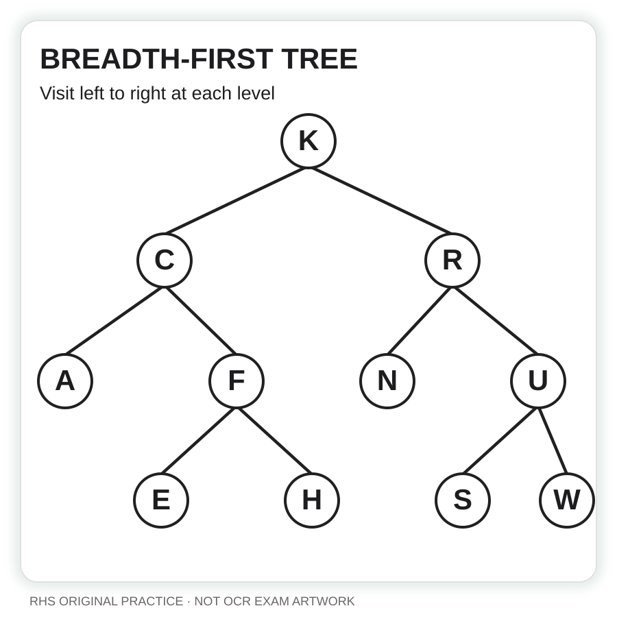
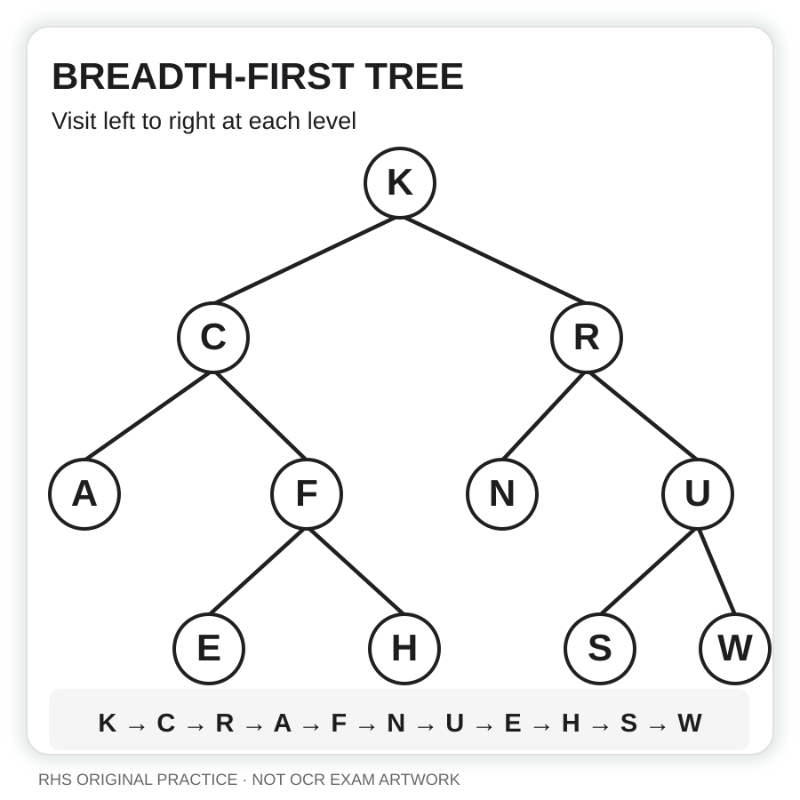
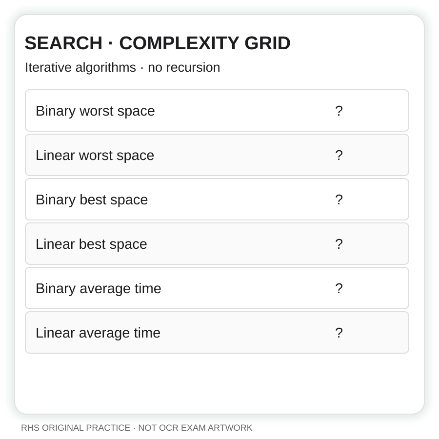

QUESTION 1 OF 3
Q1(d) · Breadth-first traversal · 6 marks
Starting at K, give the complete breadth-first visit order, taking left siblings before right siblings.
Answer · review
K, C, R, A, F, N, U, E, H, S, W. One marking point for each grouped level/branch pair, pending source moderation.

Binary search · complete the code
Fill the six blanks. Search the sorted array using inclusive bounds; return the index or −1.
01 function binarySearch(dataArray, lower, upper, ______)
02 while true
03 if upper < lower then
04 return ______
05 endif
06 middle = lower + ((upper - lower) DIV ______)
07 if dataArray[middle] < wanted then
08 lower = ______
09 elseif dataArray[middle] > wanted then
10 upper = ______
11 else
12 return ______
13 endif
14 endwhile
15 endfunctionWorked answer · 6 marks
In order: wanted; −1; 2; middle + 1; middle − 1; middle.
01 function binarySearch(dataArray, lower, upper, wanted)
02 while true
03 if upper < lower then
04 return -1
05 endif
06 middle = lower + ((upper - lower) DIV 2)
07 if dataArray[middle] < wanted then
08 lower = middle + 1
09 elseif dataArray[middle] > wanted then
10 upper = middle - 1
11 else
12 return middle
13 endif
14 endwhile
15 endfunction
QUESTION 3 OF 3
Q2(b) · Search complexity · 6 marks
Fill six Big-O values for iterative binary and linear search, using O(1), O(log n), or O(n).
Answer · review
Four auxiliary space values: O(1). Binary average time: O(log n). Linear average time: O(n).